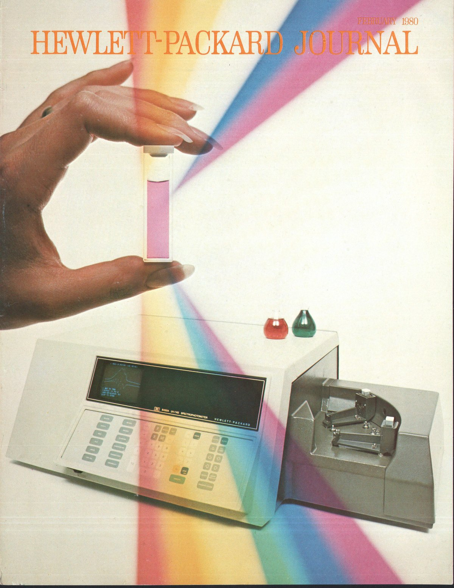

HP 8450A
The first commercial diode-array spectrophotometer grabbed a whole spectrum in under a second — fast enough that HP turned the lab instrument into an interactive command-line terminal

Overview
The HP 8450A (1979) was the first commercial UV-visible spectrophotometer built around a photodiode array. Where a conventional spectrophotometer swept a grating mechanically to measure one wavelength at a time, the 8450A passed wideband light through the sample into a spectrograph that dispersed it onto two 210-element photodiode arrays, reading the entire 200-800 nm spectrum simultaneously in under one second. Because a scan was effectively instant, HP redesigned the interaction around speed: the 8450A stopped being a dial-and-meter box and became an interactive, state-operated terminal with a built-in five-inch CRT and a task-oriented command keyboard. It was, in HP's own words, a "user-oriented" and "friendly" machine.
Deep dive
The 8450A reversed traditional design: wideband light passed through the sample into a spectrograph, dispersing all wavelengths simultaneously onto the diode array rather than sweeping serially. Acquiring the full spectrum in under a second removed the old "one time constant per resolution element" bottleneck and made interactive measurement possible — results could be obtained, viewed, and acted upon in real time.
A built-in five-inch-diagonal CRT displayed up to 16 lines of 32 characters plus two 256-point plot areas; the vertical-scan display was chosen to plot spectra efficiently. The operator drove the machine with a task-oriented command language entered on a full keyboard arranged so a command's keystroke flow ran from upper-left to lower-right and ended on an EXECUTE key.
Commands mixed spectral operations, arithmetic, and display — the explicit form "DISPLAY TO PLOT ABSORBANCE 350 TO 700 EXECUTE," or a direct pH calculation: "MEAS (7.22 + 7.127 * LOG (ABS 426-440/ABS 554-566)) EXECUTE." The machine was largely state-operated: operational definitions could be set up and sequenced regardless of keyboard entry order.
Each keystroke was echoed on the CRT and error-checked; on a mistake the system moved a cursor to the offending entry, beeped, and displayed an explanation, and the operator could insert, delete, or replace keystrokes in the line — a command-line terminal's editing affordance transplanted into a chemistry instrument.
A built-in controller used HP's new silicon-on-sapphire (SOS) microprocessor, an external 16-bit multiplier for the ~20,000 multiplications a second a scan demanded, 57,344 bytes of preprogrammed ROM, and 32-64 KB of dynamic RAM storing seven to twenty-five complete spectra. The "friendly" personality lived in the ROMs.
Team & pioneers
- Barry G. Willis. HP; project manager for the 8450A and co-author of the "Task-Oriented Approach to Spectrophotometry" HP Journal article.
- Arthur Schleifer. HP; co-author of the task-oriented approach article.
- Hewlett-Packard (Avondale, Pennsylvania). Manufacturer, analytical instrument division (later Agilent Technologies).